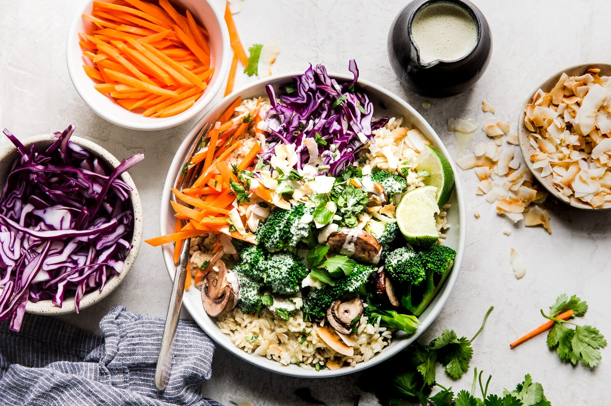

Green Curry Buddha Bowl

Description
What’s green, filling, and delicious all over? This green curry Buddha bowl! Thanks to it’s exotic green curry sauce, this meat-free and veggie-packed dish is the healthiest thing you’ll ever love.
Ingredients
Main Ingredients
- 4 cups brown rice, cooked
- 2 heaping cups broccoli florets
- 1 cup carrots, julienned
- 1/4 head purple cabbage, thinly sliced
- 6-8 large crimini mushrooms, sliced
- 2 tsp olive oil
- cilantro
- lime wedges
Green Curry Sauce
- 1 cup raw cashews
- 2 tbsp green curry paste
- 14oz can coconut cream
- 1 tbsp lime juice
- 2 tsp fish sauce
- 1-2 tsp brown sugar
- 1/2 tsp salt
How to Make a Buddha Bowl
- To make the curry sauce, combine all ingredients in a Vitamix blender and blend on high until for 2 minutes.
- In a small bowl, coat the mushrooms in the olive oil. Set a pot fitted with a steaming basket and 1 inch of water in it over low heat. Place the broccoli and mushrooms in the basket and steam until the broccoli is tender, about 5 minutes.
- Assemble bowl by layering the veggies over the brown rice and drizzling with curry sauce. Garnish with Toasted coconut, cilantro and a squeeze of lime.
Back to Main Page